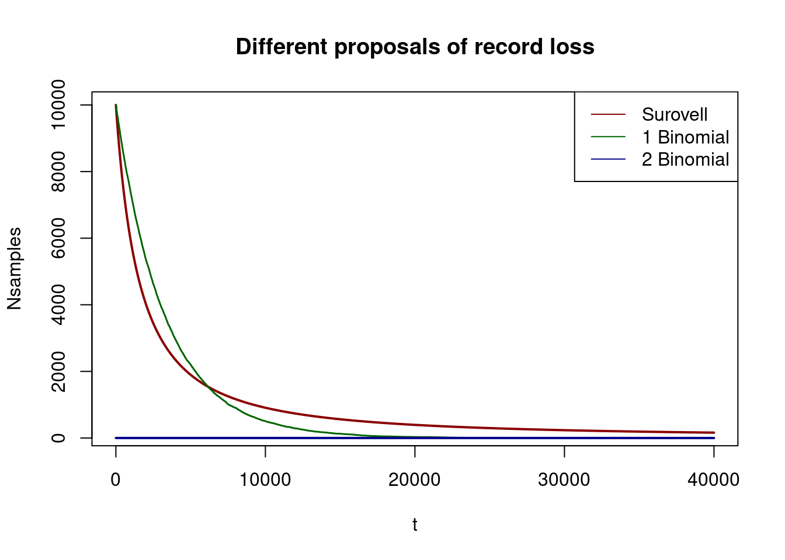

4 Record formation
4.1 Theoretical model
We have produced a computational model, replicating the process of formation of the archaeological record in a specific site, accounting for different variables. In order to consider the possible relation between those variables, we have decided to express them as a Directed Acyclic Graph (DAG), following the ECS-DAG methodology proposed by Ferguson et al. (2020). In this case, however, and because our goal is to obtain an accurate initial template for the development of the model, we have not considered setting an exposure variable, but rather to propose different theoretical directional and causal relationships without relying on the conventional exposure-outcome assessment. Therefore, highlights in the graph below do not intend to differentiate among confounders, mediators, etc., but to emphasize the possible weight that each variable has for producing the outcome (produced waste by \(m^2\)).
The above graph depicts a very schematic way to represent the formation of the archaeological record (\(W/m^2\)). In this case, we are interested in radiocarbon dating, focusing on bone samples; that is the number (and range) of potential 14C dates produced in a site, and this is key to understand the way in which we produced the model. We are aware that generating a specific archaeological palimpsest depends on a large quantity of variables, some of which may be controlled by field archaeologists and some of which may not (or are not). Therefore, the graph above must be read as follows. Asides from the outcome variable, the exposure variables, Pop (group size), Anthropogenic deposition rates and Natural deposition rates (depicted in orange), are designed in a way that they can be activated for the model to infer them, they can be provided by the archaeologist, or they can be simply ignored. In the most elementary case, the archaeologist could introduce directly the outcome variable (\(W/m^2\)) without taking into account anything else, if she/he is confident to provide an accurate value.
However, in most cases, this information will not be known to the field researcher, and in this situation, these variables can be modeled to different extents of complexity. While, for example, in the case of the most simple simulation, the field archaeologist could ignore deposition rates. In this case, and because we are only considering 14C dates, then the quantity of the sample becomes broadly proportional to the number of people present in a site, and thus it could be modeled like this.
However, deposition rates are difficult to ignore if we want to account for the formation process of the archaeological record. If these are known to the archaeologists that developed fieldwork, then this would be the behaviour of the model for creating \(W/m^2\).
Finally, if these are not known to the archaeologist, but they want to model them, then we would go back to the first DAG. In this case, keep reading for the specificities of the model.
This is how each variable works specifically:
- Waste produced (\(W/m^2\) or just \(W\)) (outcome variable): Archaeological record present per \(m^2\). Since we are considering C14 dates coming from bone, this is the quantity of C14 samples present a time t and at a depth d. Thus, this variable depends on time and depth.
\[W(t,d)=function(t,d)\].
We have considered this a discrete variable (number of potential samples) with range \([0,\propto K]\). Defined in code as W.
The variables time (\(T\)) and depth (\(D\)) must also be defined. Thus
- T describes the time, discretely, in years, of existence of the site. For the simulation, this time will be known. Thus, in the simulation \(T_{birth}=(T=0)\) and \(T_{max}=T_{death}\). Values of \(T\) are represented by \(t\).
- D is the depth, in cms, where each specific sample is deposited at a time \(t\). This is a continuous variable with range \([0,\infty]\), and for any \(t\), we know that \(0\leq D(t)\leq d_0\) and that
\[D(t)=max\{D(t-1)-r,0\} \tag{1},\\ t=1,2,...,T_{max},\]
where \(r\) is the natural deposition rates.
- Population (group size) (\(P\)): Discrete variable with range \([0,\sim K]\). Population group size is key to determine anthropogenic deposition rates (which in turn determine \(W\)) but it can also be used as a proxy to determine \(W\) in case deposition rates are not accounted for since, in any case, \(W \propto Pop\). The model includes the possibility to create a stochastic demographic process (see below), but the user can also set fix values for population or set the parameters in a way that the stochastic process is constrained. In any case, the user does have to provide a value for the carrying capacity (\(K\)) as this will limit population growth. Defined in code as
Pop. - Anthropogenic deposition (\(A\)): Amount of bone kilogram/year deposited by each group at a time \(t\). This is a continuous variable, with range \([0,\infty]\), measured in Kg. See Anthropogenic deposition protocol for full definition.
- Natural deposition rates (\(r\)): This is a continuous variable, with range \([0,0.5]\), measured in cm/year. Because, under normal circumstances, bones are thicker than any possible amount of earth deposited per year, even in a perfectly uncorrupted archaeological sequence (which is what is being modelled here), those would occupy microstrats belonging to different years. This variable is one of the responsibles for how many microstrats will each bone be occupying. See Depth protocol to understand how it works. Defined in code as
r. - Site function: Has not been considered as a variable per se but, rather, as a group of variables, which are defined by the functionality of the site, and that condition the outcome of \(A\). See Anthropogenic deposition protocol to understand how these are modelled.
- Site type: Site type (whether a site is a cave, a rockshelter or an open-air camp) can heavily condition the deposition rates at any archaeological location. However, in order to reduce uncertainty and not make an overcomplex model, we have decided to embed this condition, and the possible expert knowledge related to it, within the definition of the variable \(r\).
4.2 Implementation
This simulation for the creation of the archaeological record has been divided in three phases, or protocols. First, we populate the site, according to a stochastic demographic process, second we generate a sample for each time \(t\) and, in the third and final step, we distribute the amount of waste for each \(d\).
In order to fully understand the process, first we will show the protocols and functions used. To start with, let’s inspect the package with the functions functions:
| Package | Topic | Title |
|---|---|---|
| archaeoriddle | A_rates | Simulate anthropogenic deposition |
| archaeoriddle | D_along | Depth protocol deposition |
| archaeoriddle | Gpd | Generation of population dynamics |
| archaeoriddle | K_lim | Simulation of carrying capacity limitation |
| archaeoriddle | Pop_stoch | Stochastic population generation |
| archaeoriddle | death | Simulation of death process |
4.2.1 Population \(Pop\)-protocol
This protocol generates a stochastic demographic process with maximum population \(\sim K\). It is based on three functions. The first function, Gpd(), is the core of the protocol. It receives a population matrix or data.frame with a specific number of individuals (nrow), their age (df[,1]) and their sex (df[,2]) and produces another object with the same format but with a different population based on the current one. Introduced in a loop, this function produces a time series of population, which ensures the Markov property of the stochastic process \(p(x_n+1|x_n)\).
| Gpd | R Documentation |
Generation of population dynamics
Description
Protocol to generate a stochastic demographic process
Usage
Gpd(
x,
K,
W_fert_age = c(10, 45),
M_fert_age = c(15, 55),
p_offspring = 0.3,
prob = 0.8,
...
)
Arguments
x |
Input data with initial population matrix. A data frame or matrix
with two columns and |
K |
Carrying capacity. |
W_fert_age |
Vector with two values. The first value is the youngest age
at which is considered that women can have children for prehistoric societies.
The second value is the oldest age at which is considered that women can
have children. Default is |
M_fert_age |
Vector with two values. The first value is the youngest age
at which is considered that men can have children for prehistoric societies.
The second value is the oldest age at which is considered that men can have
children. Default is |
p_offspring |
Probability of a woman having a son per year. Default is 0.3. |
prob |
Probability that an individual will die per year if total population exceeds K. Default is 0.8 |
... |
Arguments passed to |
Value
data.frame with two columns, where the number of rows is the number of people. The first column contains the ages and the second column contains the sex.
However, this function also relies on two the other functions: death() and K_lim(). death() is the process of people dying each year. It is based on an age-structured probability matrix, where infants and old people have more probabilities of deceasing. The matrix is provided, but the user can set its own. K_lim() limits the population when it reaches \(K\). The user should specify the appropriate value for \(K\) according to the size of the site, its type, the group economy, etc. Also, the user can change the probability that exceeding people dies with parameter prob. Default is 0.8.
| death | R Documentation |
Simulation of death process
Description
For a single individual, returns whether it lives (0) or dies (1) Meant to be used with apply on the population data.frame x
Usage
death(
x,
pd = data.frame(Age = c(0:99), P_d = c(rep(0.14, 1), rep(0.16, 4), rep(0.05, 5),
rep(0.01, 24), rep(0.03, 14), rep(0.1, 10), rep(0.3, 42)))
)
Arguments
x |
A vector or data.frame with a single row from the population matrix. It must contain two values or columns, Age and Sex |
pd |
The probability matrix for mortality by age The age-structured data frame is based on Gurven, Kaplan and Supa, 2007. It is extracted adapted after computation from their text (not graphs or tables) |
Value
A value 0 or 1 where 0 = person lives and 1 = person dies, based on pd (the probability matrix)
| K_lim | R Documentation |
Simulation of carrying capacity limitation
Description
If the population exceeds the carrying capacity, it eliminates oversize with prob probability per person exceeding.
Usage
K_lim(x, K, prob = 0.8)
Arguments
x |
Data frame or matrix. Population (number of people) |
K |
Integer. Carrying capacity. Provided by the user |
prob |
It is the probability of dying when surpassing carrying capacity |
Value
Returns a data.frame with the updated population
In order to account for the chronological occupation of the site, a demographic process must be produced, where the sample is generated accordingly. The function Pop_stoch consider this.
| Pop_stoch | R Documentation |
Stochastic population generation
Description
It reproduces the population stochastic process. The result is a vector with the number of individuals for each year.
Usage
Pop_stoch(pop_size, K, ts, prob = 0.8, ...)
Arguments
pop_size |
Integer, the initial population |
K |
Only if model_pop = TRUE. In this case, it is the carrying capacity |
ts |
Time-span, the number of years considered for the process |
prob |
Probability that an individual will die if total population exceeds K. Default is 0.8 |
... |
Additional arguments passed to |
Value
A vector with the population size for each year from 1 to ts
Show code
Code
## Function 1. Generation of population dynamics
Gpd <- function(x, K, W_fert_age = c(10, 45), M_fert_age = c(15, 55),
p_offspring = 0.3, prob = 0.8, ...){
## Process of having offspring
# Female fertile population
W <- x[x[,2]=="F", ]
W_fert <- W[W$Age > W_fert_age[1] & W$Age < W_fert_age[2], ]
# Male fertile population
M <- x[x[,2]=="M", ]
M_fert <- M[M$Age > M_fert_age[1] & M$Age < M_fert_age[2], ]
## Probability of having descendance per woman
# Penalisation in case there are too few men
pen <- round(nrow(M_fert)*2 / nrow(W_fert), 2) # Assumes one man can have two women
pen[pen>1] <- 1 ## The men penalisation can never multiply the birth rate per woman
# Probability of a woman having a son per year
p_offspring <- p_offspring*pen
## Aging process. They get one year older
x$Age <- x$Age+1
## Births are new population that's added
n_offspring <- sum(rbinom(nrow(W_fert), 1, p_offspring))
new_pop <- data.frame(
"Age" = rep(0, n_offspring),
"Sex" = sample(c("M","F"), n_offspring, prob=c(0.5, 0.5), replace=TRUE))
x <- rbind(x, new_pop)
## Process of dying
vec_d <- apply(x, 1, death, ...)
x <- x[vec_d==0, ]
## Apply carrying capacty restrictions
x <- K_lim(x, K = K, prob = prob)
return(x)
}
## Function 2. Simulation of death process
death <- function(x, pd=data.frame("Age" = c(0:99),
"P_d" = c(rep(0.14,1),
rep(0.16,4),
rep(0.05,5),
rep(0.01,24),
rep(0.03,14),
rep(0.1,10),
rep(0.3,42)))){
age <- as.numeric(x[1])
return(rbinom(1, 1, prob=pd[pd$Age==age, 2]))
}
## Function 3. Simulation of carrying capacity limitation
K_lim <- function(x, K, prob=0.8){
p <- nrow(x)
if (p>K){
o <- rbinom(p-K, 1, prob)
o <- sum(o[o==1])
o[o==0] <- 1 # Avoids problem eliminating all the df if remove == 0
x <- x[-sample(1:nrow(x), o, replace=FALSE), ]
}
return(x)
}
## Function 4. Stochastic population generation
Pop_stoch <- function(pop_size, K, ts, prob = 0.8, ...){
## Create initial population
pop_matrix <- data.frame(
"Age" = sample(10:30, pop_size, 10:30, replace = TRUE),
"Sex" = sample(c("M","F"), pop_size, prob = c(0.5,0.5), replace = TRUE)
)
## Initialize vector with population size for each year
pop <- vector(length=ts)
pop[0] <- nrow(pop_matrix)
## Run stochastic process
for (i in 1:ts){
pop_matrix <- Gpd(pop_matrix, K=K, prob=prob, ...)
pop[i] <- nrow(pop_matrix)
}
return(pop)
}4.2.2 Anthropogenic deposition \(A\)-protocol
This generates the amount of human waste produced for each \(t\) (In kilograms of bone). It is defined as:
\[A(t)= Pop(t)\times O(t)\times F(t) \times G(t),\\ \text{with}\ t = 1,2,...,T_{death} \tag{2}\] Where:
- \(Pop(t)\) is a discrete variable representing the number of living people at a time \(t\).
- \(O(t)\) is the proportion of time of the year that the group spends in the camp for each time \(t\). It is a continuous variable with range \([0,1]\). In the code, this is defined as the parameter
in_camp_stayand it is provided as the number of weeks, considering 52 the maximum number of weeks for a year. - \(F(t)\) is the proportion of bone for the full weight of each Kg of an animal consumed for a time \(t\). This is a unit interval variable \([0,1]\).
- \(G(t)\) is the quantity, in Kg, of a (full-weight) animal consumed in a site by each individual at a time \(t\). This is a continuous variable with range \([0,\propto K]\). This is a hierarchical variable, defined as follows:
\[G(t)=S(t)\times\frac{C(t)}{R(t)} = S(t)\times\frac{B(t)\times M(t)}{R(t)} \tag{3}\]
Where:
\(S(t)\) is the proportion of meat consumed within the camp. \([0,1]\)
\(R(t)\) is the quantity of kilocalories produced for each kilogram of meat. This is a continuous with range \([1,2.5]\). Total kilocalories have been divided by 1000 for easier computation.
And \(C(t)\) is the quantity of kilocalories, extracted from meat, consumed by person for each time \(t\). It is in turned is defined as \(C(t)=B(t) \times M(t)\), where
\(B(t)\) is the quantity of kilocalories consumed by an individual for each \(t\), and it has a range \([1.5,2.5]\times 365\). For easier computation, the actual average of kilocalories consumed per person/day has been divided by 1000.
\(M(t)\) is the proportion of kilocalories coming from meat relating to the total calories consumed per each individual. \([0,1]\).
As it can be seen, the above definitions embed the functionality of the site, which can be considered by the user. In practice, setting the variables \(O(t) = 1\) and \(S(t) = 1\) would eliminate site functionality. This would assume that a site is inhabited by all the group during the full year, and that this group consumes all the food in the site.
Up to now, we have obtained the value for the variable \(A\), which is the amount of kilograms of bone produced at each time \(t\). If we consider 4 grams of non-heated bones per sample, we can extract the number of samples at time \(t\), which we cal \(W(t)\)
\[W(t)=\mbox{Integer part of } \Bigg(\frac{1000 \times A(t)}{4} \Bigg) \tag{4}\]
This protocol is captured in the following function:
| A_rates | R Documentation |
Simulate anthropogenic deposition
Description
Simulation of samples generated per year (anthropogenic deposition rates) Returns the Kilograms of bone produced per year in a site.
Usage
A_rates(
x,
kcalpers = 2,
kcalmeat_eat = 0.45,
kcalmeat_prod = 1.5,
in_camp_eat = 0.55,
in_camp_stay = 13,
kg = 0.07
)
Arguments
x |
Integer (user provided), vector or data.frame. If integer, it is the number of
people inhabiting the site. If data.frame, the number of people is the number
of rows. If vector, it is the length of the vector. It is |
kcalpers |
Quantity of kilocalories consumed per day per adult person.
It corresponds to |
kcalmeat_eat |
Proportion of kilocalories extracted from meat. Range 0,1.
Default is 0.45, based on Cordain et al (2000). It is |
kcalmeat_prod |
Quantity of kiocalories per meat kilogram. Range 1,2.5
Default is 1.5, considering goat meat. It is |
in_camp_eat |
Proportion of food consumed within the camp. Range 0,1.
Default is 0.55 based on Collette-Barbesque et al. (2016). |
in_camp_stay |
Proportion of time spent in a specific camp. Valid for
groups with high mobility. The proportion is computed within the function, but
the user introduces the weeks of occupation of the camp, where the maximum is
52 (full year). Default is 13 (weeks, or 0.25 of the year, or three months a year).
It corresponds to |
kg |
Bone proportion for each animal consumed. Default is 0.07
based on Johnston et al. (2021). It corresponds to |
Value
The number of samples
A_rates code here:
Show code
Code
## Function 5. Simulate anthropogenic deposition
A_rates <- function(x,
kcalpers = 2,
kcalmeat_eat = 0.45,
kcalmeat_prod = 1.5,
in_camp_eat = 0.55,
in_camp_stay = 13,
kg = 0.07){
if (is.data.frame(x) == TRUE){
P <- nrow(x)
} else if (length(x) == 1){
P <- x
} else {
P <- length(x)
}
# Check variable values are within the defined ranges
if (1.5 <= kcalpers & kcalpers <= 2.5){
B <- kcalpers*365
} else {
stop('kcalpers must be within [1.5, 2.5]')
}
if (0 <= kcalmeat_eat & kcalmeat_eat <= 1) {
M <- kcalmeat_eat
} else {
stop('kcalmeat_eat must be within [0, 1]')
}
if (1 <= kcalmeat_prod & kcalmeat_prod < 2.5) {
R <- kcalmeat_prod
} else {
stop('kcalmeat_prod must be within [1, 25]')
}
if (0 <= in_camp_eat & in_camp_eat <= 1){
S <- in_camp_eat
} else {
stop('in_camp_eat must be within [0, 1]')
}
if (in_camp_stay <= 52){
O <- round(in_camp_stay/52,2)
} else {
stop('A year cannot have more than 52 weeks')
}
C <- B*M
G <- (C * S) / R ## Quantity (in kg) of animal consumed per person in camp during year t
A <- P * O * kg * G ## kilograms of meat consumed within a camp by the group
W <- round((1000 * A) / 4) ## samples extracted from that meat
return(W)
}4.2.3 Depth \(D\)-protocol
This protocol is designed to respond to the fact that, despite a bone is deposited at time \(t\), it can occupy the estratigraphic space of many subsequent years until it is fully buried. The amount of years it takes to be fully buried depends on the thickness of the bone and the natural deposition rates \(r\).
Since the thickest bones are usually the minority within a sample, while the majority is usually conformed of smaller bones, we have considered that bone presence decreases exponentially from \(t_0\), the year when it was deposited. Thus, this process is modeled as follows:
\[W_b(t_u,t_l)=W(t=t_l)\times(1-e^{-\lambda(t_u-t_l)}),\ t_u < t_l \tag{5}\]
Where
- \(W\) as defined before, it is the number of samples deposited at a time \(t_l\)
- \(W_b\): is the number of samples buried at a time \(t_u\) from the ones generated at \(t_l\). Thus, \(t_u \geq t_l\)
- \(t_l\) is the moment in time \(t\) when the samples \(W\) are deposited.
- \(t_u\) is each time \(t\), \(t \geq t_l\), when the sample is being buried according to the parameter \(r\).
- At \(t_{u_{max}}\), the sample is completely buried. \(t_{u_{max}}>=t_u>=t_l\)
\(t_{u_{max}}\) depends on two factors:
- \(L\) is maximum thickness of the thickest bone in the direction of the deposition, in cm.
- \(r\) is the natural deposition rate, in \(\mbox{cm/year}\). For this model, we have considered the values 0.1, 0.2, 0.3, 0.4 and 0.5
Thus we can calculate the time it takes for a sample to be fully buried as
\[r = \frac{L}{t_{u_{max}}} \Rightarrow t_{u_{max}}=\frac{L}{r} \tag{6}\]
Estimation of \(\lambda\)
Now we need to estimate the exponential rate \(\lambda\) in equation \((5)\). In order to do so, we consider the state of the model when \(t_l=0\) and \(t_u=t_{u_{max}}\), which marks the time at which the first samples deposited are completely buried. And consider the following
\[\frac{W_b(t_u,t_l)}{W(t=t_l)} \tag{7}\]
is the proportion of buried samples in \(t_{u}\) from the ones that were deposited in \(t_l\). Thus, if we substitute the time points specified above and plug in equation 5, we have that
\[\frac{W_b(t_u=t_{u_{max}},t_l)}{W(t_l=1)}=1-e^{-t_{u_{max}}\lambda} \tag{8}\]
However, since we consider that all of the samples buried in \(t_{u_{max}}\), then the proportion on the left hand side is 1, and in this situation \(\lambda \rightarrow \infty\) so we cannot use the equation. We can especify an error margin, \(\theta_e\) to the proportion of buried samples in \(t_{u_{max}}\), say \(99\%\). In this case, \(\lambda\) can be easily computed as follows
\[\theta_e=1-e^{-\lambda t_{u_{max}}}\]
and thus, solving for \(\lambda\) and taking logarithms on both sides,
\[\lambda=\frac{-log(1-\theta_e)}{t_{u_{max}}} \tag{9}\]
Where \(\theta_b<1\) is the proportion of buried samples in \(t_{u_{max}}\), which is calculated in equation 6.
The function D_along captures this process:
| D_along | R Documentation |
Depth protocol deposition
Description
It distributes the samples produced in one specific year along the depth of the
site, without any kind of post-depositional alteration, and according to
pre-established post-deposition rates. Returns a vector with the samples exponentially
distributed. The vector is as long as L/r and the error (prop_buried, \theta_{\epsilon}) is considered.
Usage
D_along(
W_t,
r,
max_bone_thickness = c("m", "s", "l", "vl"),
prop_buried = 0.9999
)
Arguments
W_t |
Integer (user provided), vector or data.frame. It is the number samples produced at a specific 't'. |
r |
Is the natural deposition rates. At this moment. Values greater than 0.5 are not accepted. If values with two or more decimals are provided, the function will automatically round the value to one decimal. |
max_bone_thickness |
Maximum thickness of bones within the assemblage. Four
values are possible: |
prop_buried |
Proportion of samples buried sample at tmax, considering error. Pb
needs to be smaller than 1. Default is 0.9999, which stands for 99.99%.
This is |
Value
A vector of samples buried at times from tl to tm
At the end, the function Rec_c runs D_along over a period of time, effectively producing an archaeological record. In the function Rec_c the user can consider whether to divide the total sample by the area of the site, or not. In addition, the user can use the modeled values (with the functions above) as an input to this function, or introduce them directly, for example, in the case that fix population rates per year were preferred.
| Rec_c | R Documentation |
Archaeological deposition record
Description
Generate archaeological deposition record over time and depth It iterates over D_along to spread the amount of samples produced at each time point over different profundities
Usage
Rec_c(x, area, ts, InitBP, persqm = FALSE, ...)
Arguments
x |
Vector with the number of samples per year. As produced as produced by iterating over A_rates. |
area |
Only if |
ts |
Time-span, the number of years considered for the process |
InitBP |
Initial year considered for the process. In BP. |
persqm |
If TRUE, the total record is divided by the area of the site (in square meters), so that the output is per square meter. Default is FALSE |
... |
This function uses the functions |
Value
A square matrix of size ts. It contains the amount of samples deposited at each year (columns) and each depth (rows)
Show code
Code
## Function 6. Depth protocol deposition
D_along <- function(W_t, r, max_bone_thickness = c("m", 's', 'l', 'vl'),
prop_buried = .9999){
# Define parameter r
if(r > 0.5) stop("values > 0.5 are not accepted for param 'r'")
r <- round(r, 1)
# Constraints for parameter Pb
if (prop_buried >= 1) stop("Pb must be lower than 1")
# Define parameter Max_bone_thickness (L)
max_bone_thickness = match.arg(max_bone_thickness)
if (max_bone_thickness == 's'){
L <- 2.5
} else if (max_bone_thickness == 'm'){
L <- 5
} else if (max_bone_thickness == 'l'){
L <- 10
} else if (max_bone_thickness == 'vl'){
L <- 20
}
# Define tmax
tm <- L/r
# Estimate lambda
l <- -log(1 - prop_buried) / tm
ss <- rep(0, round(tm)) ## Vector to distribute samples over
tl <- 0 # Year where the sample is deposited
tu <- 1 # Year when it is covered
for (i in 1:tm){
Wb <- W_t * (1 - exp(-l*(tu-tl))) # Apply formula for tu
Wbprev <- W_t * (1 - exp(-l*((tu-1)-tl))) # Calculate for previous to tu
ss[i] <- round(Wb - Wbprev) # Number of samples for each year
tu <- tu + 1
}
return(ss)
}
## 7. Archaeological deposition record
Rec_c <- function(x, area, ts, InitBP, persqm = FALSE, ...){
## Whether sqm division must be included or not
if (persqm == TRUE){
x <- x / area
}
## Spread dates along different depths
matdim <- length(x)
mat <- matrix(nrow=matdim, ncol=matdim)
for (i in 1:matdim){
new <- D_along(x[i], ...)
st <- i - 1
pos <- c(rep(0, st), new)
pos <- pos[1:matdim]
mat[, i] <- pos
}
mat[is.na(mat)] <- 0
## Names for columns (each year)
years <- seq(InitBP, InitBP-ts)
nyears <- c()
for (i in 1:matdim){
nyears[i] <- paste0(years[i], " BP")
}
colnames(mat) <- nyears
## Names for rows (each depth)
# Extract arguments as a list
extract_args <- function(x, ...){
extras <- list(...)
return(list(extras=extras))
}
dr <- extract_args(D_along, ...)
dr <- dr$extras$r
d <- rev(cumsum(rep(dr, nrow(mat)))) ## computes depths
rownames(mat) <- paste0("d = ", d, " cm")
return(mat)
}4.3 Example and simulation
With the above functions, the user can model (1) a generative demographic process, (2) how many samples would a group of people produce in a site, according to different constraints and (3) how those dates distribute along the depth of a site under the assumption that there has not been any kind of record loss or post-depositional process (this will be modelled in a second layer of modelling).
We can start the simulation with the parameters seen below (or defaults in function definitions above). To sum up, these are the steps of the simulation:
- \(Pop\)-protocol. Using
Pop_stoch, we generate a stochastic population dynamic that will give us the number of individuals for each year. - \(A\)-protocol. Knowing the population size per year, we apply
A_ratesto each of them and generate the anthropogenic deposition, and get the number of samples per year. - \(D\)-protocol. Knowing how many samples are generates each year, using
Rec_c, we distribute them along the depth record.
set.seed(1234)
# 1. Pop-protocol
Ps <- Pop_stoch(pop_size=100, ts=100, K=150)
# 2. A-protocol
samp <- unlist(lapply(Ps, A_rates)) ## Extract sample per time steps
# 3. D-protocol
Rec <- Rec_c(samp, InitBP = 7500, ts = 100, r = 0.2, max_bone_thickness = "m")With this we obtain, among other things, the distribution of the samples deposited for each date along the depth of the sit, and its comparison to the total population. For better comprehension, we have decided not to include all of the dates in the plot below, but only some of them as an example. The user can also check how the model works and its results here. The total number of population has been adapted for visualisation

Notice the exponential decay in the amount of samples per depth layer for the same year.